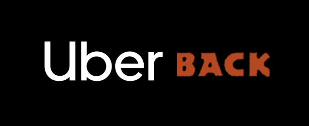
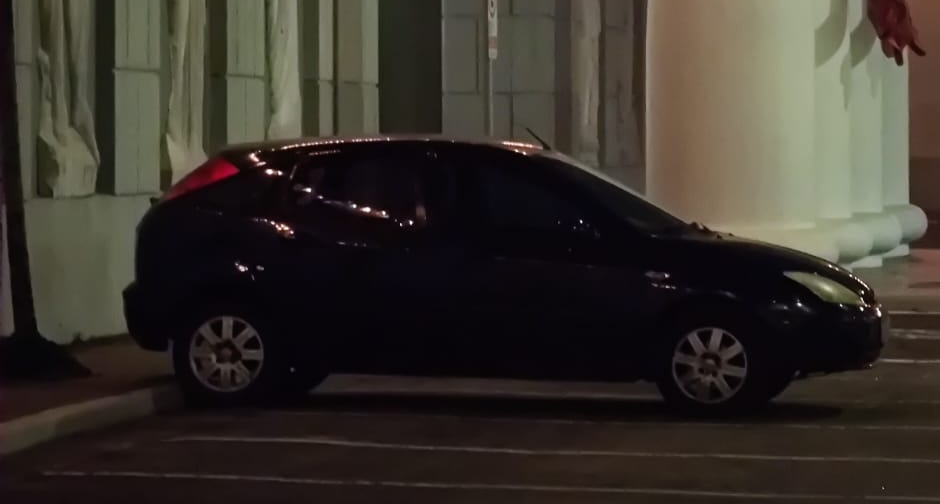

" class="img">
Introdução
Bem-vindos ao Binhoc - Uberback, onde a conveniência encontra o sabor! Somos mais do que um simples serviço de transporte; somos a fusão perfeita entre o conforto de um Uber e a deliciosa experiência gastronômica de restaurantes renomados, como o Outback e outros estabelecimentos de alta qualidade.
O Que Oferecemos?
- Desfrute de viagens seguras e confortáveis com nosso motorista profissional, o incrível e carismático Binhoc.
- Ele não apenas garante que você chegue ao seu destino com segurança, mas também adiciona uma pitada de diversão à sua jornada.
- Ele te busca até se morar você no C# de São Paulo e depois te deixa na porta da sua casinha ou no caso da Alma, ele deixa nos portões de sua mansão.
- Ao escolher o Binhoc - Uberback, você não está apenas adquirindo uma viagem, mas também uma experiência gastronômica única. Oferecemos acesso exclusivo a uma variedade de restaurantes, incluindo o renomado Outback e outros
- São estabelecimentos de alta qualidade. Nosso motorista está pronto para levá-lo não apenas aonde você precisa, mas também aonde deseja saborear algo especial mesmo que seja caro pois ele não precisa pagar!
- Esqueça a preocupação de contar com o Binhoc na conta final da refeição. Com o Binhoc - Uberback, o pagamento é simplificado. Basta pagar sua refeição diretamente sem pedir nada pro Binhoc, proporcionando a conveniência de um processo menor de pagamento para a comida, chega daquela confusão de 5 cartões na hora de pagar, nesse caso fica somente 4 cartões.
- Estabelecimentos de alta qualidade. Nosso motorista Binhoc está pronto para levá-lo não apenas aonde você precisa, mas também aonde deseja saborear algo especial.
Como Funciona?
Chamada do Binhoc:Solicite uma viagem usando nosso aplicativo intuitivo. ( WhatsApp, pode ser? ) Escolha seu destino e aproveite a jornada com Binhoc ao volante. Escolha do Cardápio: Navegue pelo cardápio do restaurante a sua escolha.
Saboreie o Momento:
Relaxe enquanto Binhoc o leva ao restaurante e, em seguida, ao seu destino final. Desfrute da refeição saborosa durante a viagem ou no local.
Pagamento Simples:
Ao chegar ao seu destino, pague a conta sem contar com a ajuda do Binhoc.
